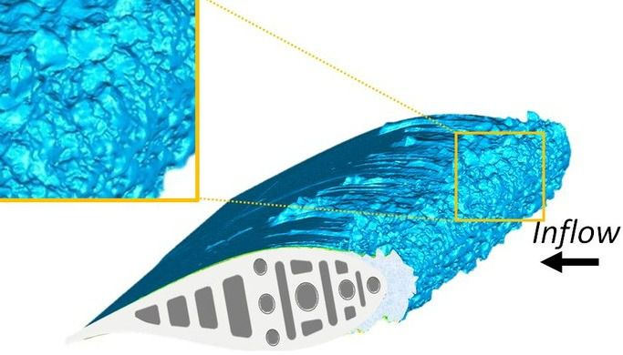
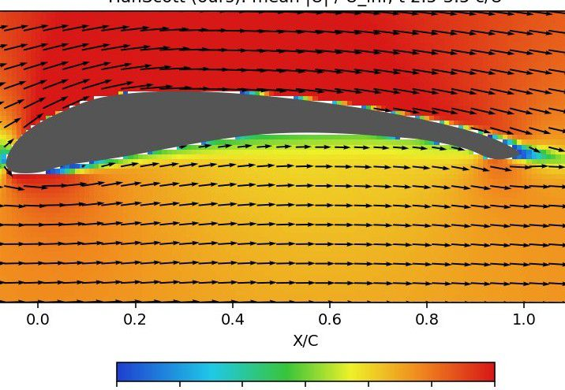
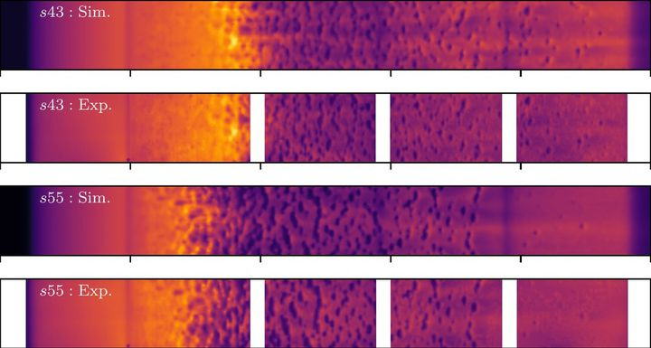

Benchmarks built on measured icing physics
Fluid dynamics has large AI-ready simulation collections, but none with measured icing physics. FROST-Bench poses four tasks with held-out splits, partial observations, and calibrated-uncertainty metrics.
T1–T4
Each benchmark ships as a dataset card with held-out splits. Generated samples are released only as labeled benchmarks, never as data.

Ice shape on unseen conditions
Generate the 3D ice shape for icing conditions and geometries held out from training.

Complete PIV shadows and sparse sensors
Fill the regions PIV cannot see, sparse pressure taps, and onboard sensors, with calibrated uncertainty.

Super-resolve PIV-like averages
Recover fine-scale fields that are consistent with coarse, PIV-like cell averages.

Multi-fidelity calibration
Calibrate simulation priors to measurements across fidelities.
Benchmark records

Rime and glaze ice on a high-lift UAV wing (S1223)
Ice grown on an S1223 UAV wing in the ISU-IRT, laser-scanned, 3D-printed, and re-tested for loads, surface pressure, and PIV. Two independent simulations of the same scanned shape complete the region PIV cannot see.

Ice-accretion ensembles for NASA IRT runs 401–405
An agent-developed 3D ice-accretion model run in ensembles on the five NASA IRT reference cases, with no fitted coefficients.

NASA IRT runs 401–405 (NACA 0012)
The classic NASA Lewis IRT icing test on a NACA 0012 airfoil, with repeat runs. FROST links it as the reference for its ice-accretion benchmark.
Submissions open with v0.5
| Rank | Method | Task | Score | Uncertainty coverage | Submitted |
|---|---|---|---|---|---|
| The leaderboard opens with FROST v0.5. The public FROST-Bench challenge covers ice-shape generation, completion of PIV shadow regions, and in-flight ice inference. | |||||
Annual workshop and hackathon
Co-located with the AIAA AVIATION Forum, where the icing community already meets.
AIAA Ice Prediction Workshop
Curated FROST cases offered to the Ice Prediction Workshop, where predicted heat-transfer coefficients once spanned 200–950 W/(m²K).
Certified envelope
FROST-Gen refuses queries outside its certified envelope rather than extrapolating, and every generated field is tagged.